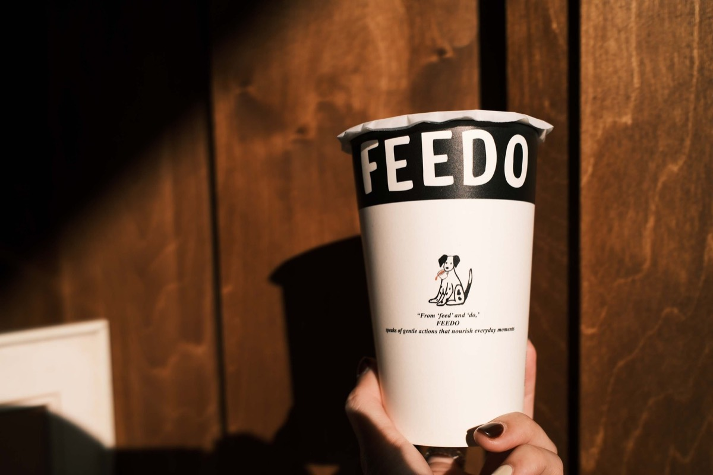
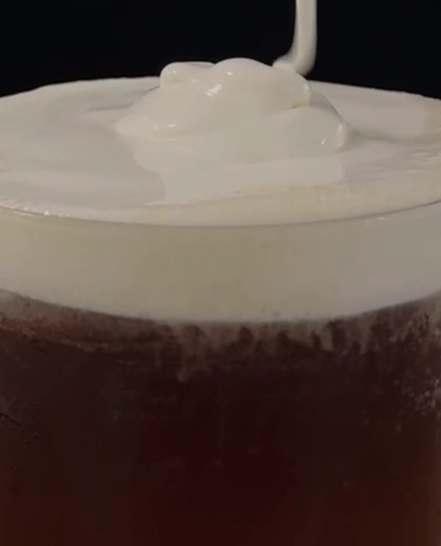

Front Page · 頭版頭條
每一杯茶，
都留著一段
等待被打開的溫度。
FEEDO 是一間以台灣烏龍為核心，用設計收藏日常的茶飲店。從輕盈花香到深沉焙火，我們整理烏龍茶由輕至重的風味，也將每次相遇轉換成一杯茶、一件物品，與一段可以留下的日常。

Stop Press · Latest News
最新消息
-
狗狗杯套 9/18 開賣
杯套不提供現場直接購買。開賣當天請先到 狗狗杯套登記 用 LINE 登入取得線上號碼牌，再於營業時間內憑條碼到店購買。每日限量，額滿為止，剩餘數量以登記頁面為準。
-
外送可預約 4 週內的日期
週一、週三到週五外送，送達時段 11:00–16:00，線上預約。
-
狗狗杯套登記規則更新
同一個 LINE 帳號登記後 3 日內不能再登記；憑條碼到店即可購買，不限本人。
Today's Edition · All Sections
今日版面
The Leaf · Why Taiwanese Oolong
為什麼是台灣烏龍？
烏龍茶是台灣最具代表性的茶之一。透過不同程度的發酵與焙火，茶能展現截然不同的風味——從清新的花香、熟果與蜜香，到溫暖深沉的焙火氣息。
FEEDO 依照風味由輕至重選茶，將不同風味整理成容易理解的座標，讓不熟悉茶的人，也能找到適合自己的那一杯。
This Issue · The Tea Menu
本期茶單
由輕至重的代表茶款，完整茶單共 8 支，在訂購網站。
青心烏龍
$60高山上，清冷的花香
凍頂烏龍
$45一縷焙火，溫潤回甘
台東紅烏龍
$50熟果蜜香，琥珀色的溫度
炭焙烏龍
$60龍眼木炭火，沉穩收尾

招牌奶蓋
我們不使用奶蓋粉，堅持以奶油乳酪為基底，加入鹽、煉乳、鮮奶油與鮮乳，在低溫的狀態下打發出不多不少、剛剛好的滑順度。鹹甜的對比，讓單茶的風味更加清亮、鮮明。
「鮮奶茶是乳化的溫柔，奶蓋則是層次的提煉。」
Editorial · Our Manifesto
品牌理念
用最理性的座標，
餵養最感性的日常。
FEEDO 來自 feed 與 do——以微小的行動，滋養你的一天。
我們以台灣烏龍為核心，也喜歡透過設計，把生活中美的事物轉換成一杯茶、一只杯套、一張照片，或一段可以被留下的日常。
時間
依發酵與揉捻，細細加減沖泡時間
溫度
每支茶，都有自己剛剛好的溫度
水
用手感調出比例，不交給機器
Local Hero · Moby
認識 Moby

- 生日
- 2025.03.20
- 興趣
- 玩耍、奔跑
Moby 是我們家的狗狗。什麼都好奇、什麼都想聞聞看，主人在哪，都要跟在腳邊。
從杯套、照片到房間裡的收藏，Moby 陪著 FEEDO 記錄每一次相遇。
帶著 Moby 出門，標記 @feedomuseum，你的街拍可能登上下一期 Feedo Times。
The Enquiry Desk · FAQ
常見問題
可以現場點嗎？一定要預訂嗎？
可以直接到門市現場點。線上預訂適合想先訂好、到店直接取茶的人。
狗狗杯套怎麼買？
杯套不提供現場直接購買。請先到 狗狗杯套登記 用 LINE 登入取得線上號碼牌，再於登記當日營業時間內憑條碼到店購買。每日限量，額滿為止，剩餘數量以登記頁面為準。
有外送嗎？哪幾天？
有。週一、週三到週五外送，送達時段 11:00–16:00，線上可預約 4 週內的日期。
可以帶寵物嗎？店裡有座位嗎？
營業時間？
11:00–18:00，每週二公休。臨時異動以 Instagram 公告為準。
Call Me · Come Say Hello
來店資訊
地址臺南市中西區友愛街 24-1 號
營業11:00 – 18:00（週二公休）

★ Printed With Pride At The Feedo Press · West Central District, Tainan · Every Tea Leaf Remembers The Heat ★